strategicresourcemanagement: persons: person
5.1.0 - release
strategicresourcemanagement: persons: person - Local Development build (v5.1.0) built by the FHIR (HL7® FHIR® Standard) Build Tools. See the Directory of published versions
Källa: Personuppgiftstjänsten – Tjänstekontraktsbeskrivning, version 5.1 (2024-11-28), TKB_strategicresourcemanagement_persons_person.docx.
Tjänstedomänen hanterar uppgifter om person som dels finns registrerade i folkbokföringsregistret hos Skatteverket, dels har tillkommit genom uttagande av reservidentiteter, dels har tillkommit genom personens egna kompletteringar kring kontaktuppgifter.
Nedanstående diagram visar hur man kan hämta personuppgifter på en eller flera personer utifrån deras reservidentiteter, personnummer eller samordningsnummer.
Se Informationsspecifikation, punkt 4.2.1.
Verksamhetspersonal
Hämta personuppgifter utifrån en eller flera personidentitet(er) via GetPersonsForProfile alternativt GetPersonForProfileUnrestricted
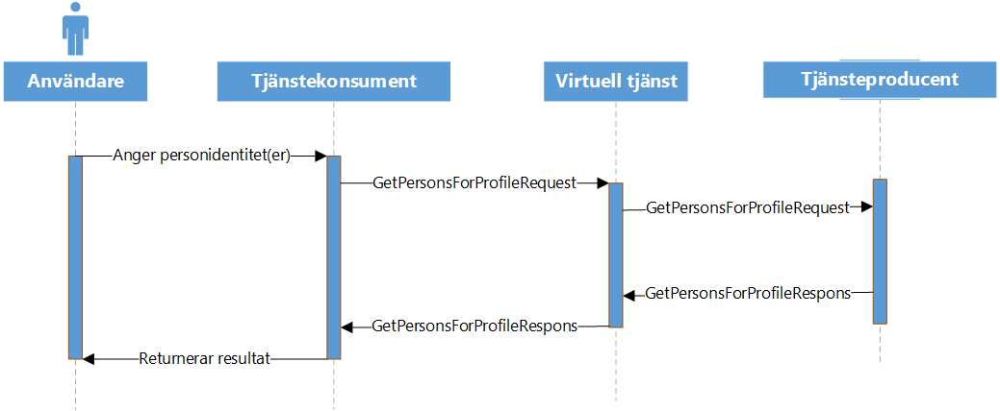
Nedanstående diagram visar hur man kan hämta personuppgifter på en eller flera personer utifrån specifika sökvillkor. Exempelvis söka på personer utifrån ett förnamn och efternamn.
Se Informationsspecifikation, punkt 4.2.2
Verksamhetspersonal
Hämta personuppgifter utifrån en eller flera personidentitet(er) via GetPersonsForProfile alternativt GetPersonForProfileUnrestricted
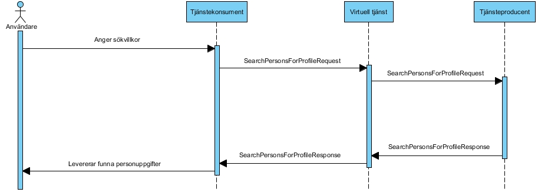
När vården har anledning att kontakta personen eller anhörig, så nyttjas ofta de olika kontaktuppgifter som finns registrerade i vårdens IT-system (på det s.k. ”patientkortet”).
Nedanstående flöde visar flödet för hämtning av personens kontaktuppgifter.
Se Informationsspecifikation, punkt 4.2.3.
Verksamhetspersonal
Hämta kontaktuppgifter via GetPersonContactInformation alternativt GetPersonContactInformationUnrestricted
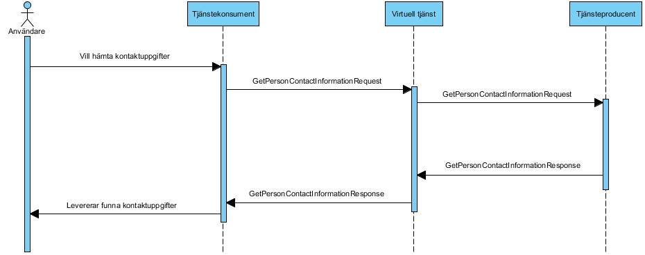
Sekvensen är densamma för GetPersonContactInformationUnrestricted.
När vården har anledning att kontakta personen eller anhörig, så nyttjas ofta de olika kontaktuppgifter som finns registrerade i vårdens IT-system (på det s.k. ”patientkortet”).
Nedanstående flöde visar flödet för uppdatering av personens kontaktuppgifter.
Se Informationsspecifikation, punkt 4.2.4.
Verksamhetspersonal
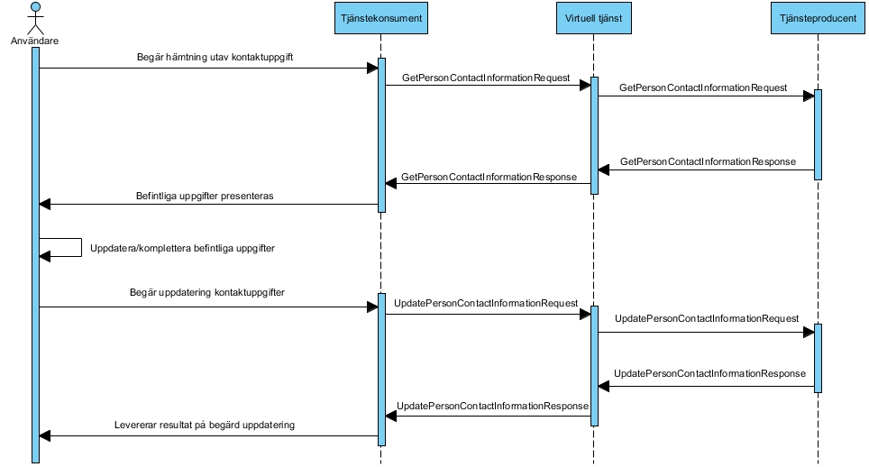
För en uppdatering av personens kontaktuppgifter ska alltid en läsning föregå uppdateringen. Läsningen kan antingen ske via GetPersonContactInformation eller GetPerson, eller via motsvarade unrestricted kontrakt. Vid användning av GetPersonForProfile/GetPersonForProfileUnrestricted så måste minst profil 3 användas.
Ibland har man behov av att kunna registrera uppgifter, t.ex journalföra på en person vars identitet ej är känd med ett svenskt person- eller samordningsnummer (PNR/SNR). T.ex när en medvetslös person kommer in på en akutmottagning. För dessa tillfällen använder man sig oftast av en temporär identitet, en reservidentitet.
Nedanstående flöde visar flödet för uttag av en nationell reservidentitet (NRID) till en person. Flödet är även detsamma för att registrera en person på en lokal reservidentitet (LRID).
Se Informationsspecifikation, punkt 4.2.5.
Verksamhetspersonal
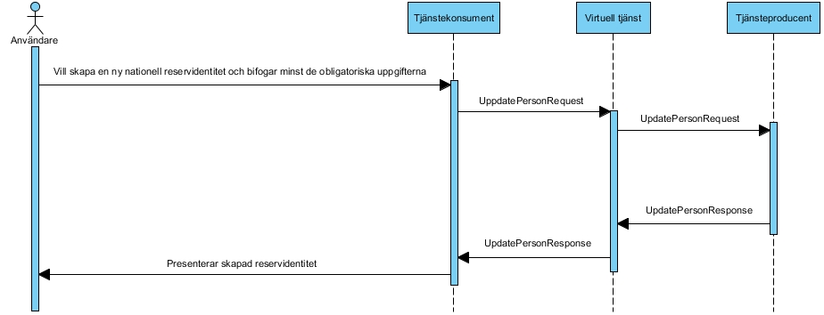
Ibland har man behov av att kunna ta ut en ”anonymiserad” reservidentitet, dvs en identitet som varken avslöjar kön eller ålder. Detta kan göras genom att man anropar tjänsten UpdatePerson utan att ange några uppgifter kring ålder & kön. Tjänsten returnerar i detta fall då en identitet som ej innehåller uppgifter kring personen. För att sen tillföra uppgifter kring denna anonymiserade identitet ska detta göras i ett senare steg (se diagrammet nedan, ”Komplettera med personuppgifter”)
Se Informationsspecifikation, punkt 4.2.5.
Verksamhetspersonal
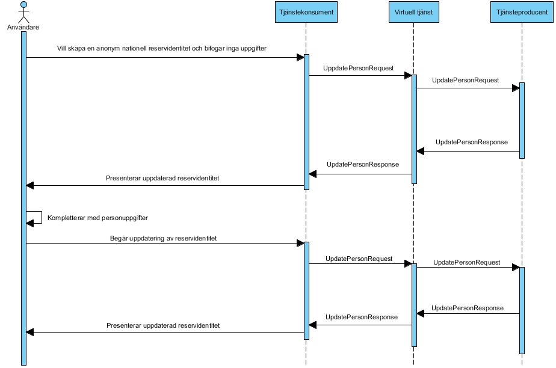
Nedanstående flöde visar flödet för uppdatering av en nationell reservidentitet (NRID) eller en lokal reservidentitet (LRID).
Se Informationsspecifikation, punkt 4.2.6.
Verksamhetspersonal
UpdatePerson
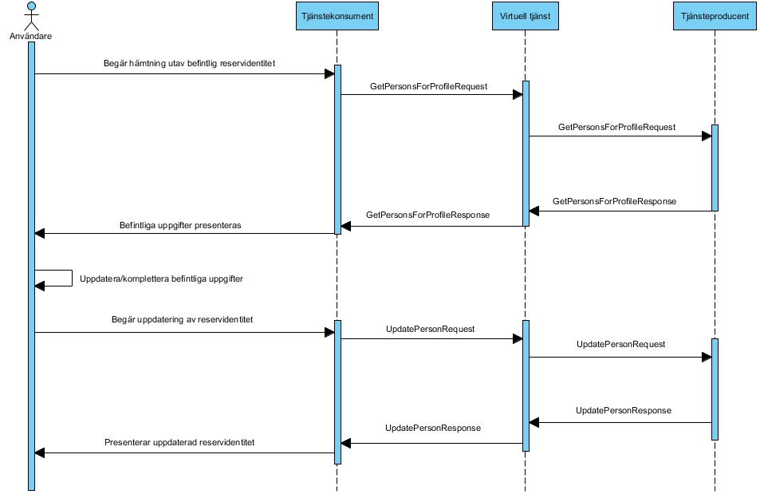
För en uppdatering av persons reservidentitet ska alltid en läsning med minst profil 4 föregå uppdateringen.
Kopplingen avser att man kopplar en befintlig identitet till en huvudidentitet. T.ex att koppla ihop en reservidentitet till ett personnummer.
Se Informationsspecifikation, punkt 4.2.7.
Verksamhetspersonal
LinkPersonIdentity
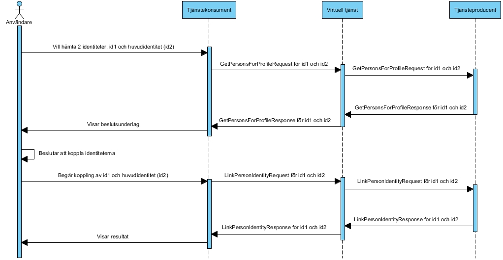
En koppling mellan en identitet till en huvudidentitet ska normalt ske utifrån ett underlag som användaren har som beslutsunderlag. Dvs genom att en koppling föregås av en hämtning av uppgifter kring de olika identiteterna bereds aktören möjligheten att jämföra namn, adress etc.
Not: För Get-kontrakten kan även GetPersonForProfileUnrestricted-kontraktet användas.
För att stödja fallet då en felkoppling av identiteter har gjorts så finns kontraktet UnlinkPersonIdentity.
Nedanstående flöde visar flödet för isärkoppling av identitet mot huvudidentitet.
Se informationsspecifikation, punkt 4.2.8
Verksamhetspersonal
UnlinkPersonIdentity
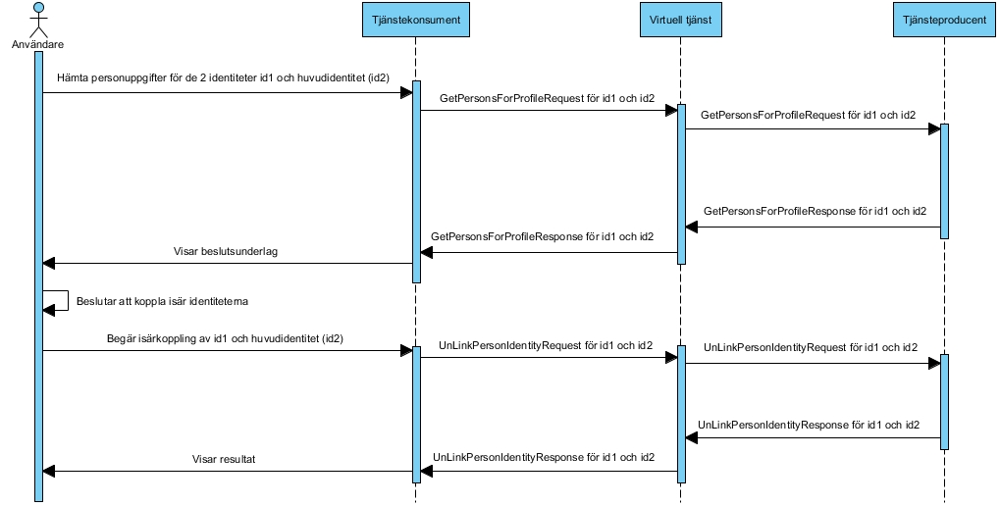
Isärkoppling av en identitet från en huvudidentitet ska ske utifrån ett beslutsunderlag, där användaren ges möjlighet att granska uppgifterna för både huvudidentiteten och den kopplade identiteten.
OBS! Vid anropet till GetPersonForProfile behöver flaggan ”ignoreReferredIdentity” vara satt till true, annars erhålls personuppgifter till huvudidentiteten även för den identitet man vill isärkoppla.
Not: För läsning kan även GetPersonForProfilesUnrestricted användas.
Nedanstående flöde visar flödet för hur ett angivande av urvalrskriterier (sökparamterar) resulterar i ett asynkront svar där resultatet levereras som en unik orderidentitet (orderId) som sen används av konsumenten vid anrop till en annan tjänst, GetFilesForOrderId, där resultatet av sökningen hämtas.
Se informationsspecifikation, punkt 4.2.2
Verksamhetspersonal
SearchPersonsForProfileByOrder (alternativt SearchPersonsForProfileByOrderUnrestricted)
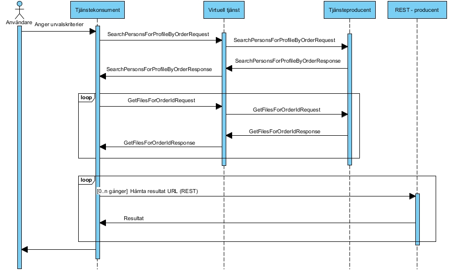
Tjänstekonsumenten kan behöva loopa anropet till GetFilesForOrderId beroende på producentens eventuella bearbetningstid. Reslutatet från GetFilesForOrderId är 0..n URL:er som sedan används för att hämta sökresultatet.
Nedanstående flöde visar hur man genom att till Personuppgiftstjänsten via en REST-tjänst kan skicka in en fil med en lista med personidentiteter. I slutändan erhålls 1..n URL:er till zippade filer med personuppgifter baserat på de personidentiteter som bifogades i filen. Genom att i anropet ange önskad profil så erhålls i svaret olika mycket detaljerade personuppgifter.
Se informationsspecifikation, 4.2.1
Verksamhetspersonal
GetPersonsByFile (REST) Hämta personuppgifter utifrån en fil med personidentiteter, se R[14]
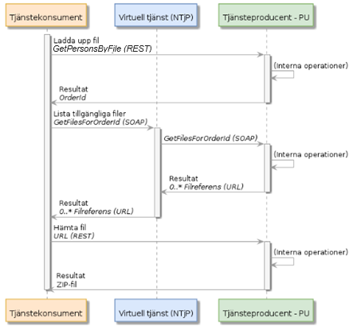
Tjänstekonsumenten kan behöva loopa anropet till GetFilesForOrderId beroende på producentens eventuella bearbetningstid. Resultatet från GetFilesForOrderId är 0..n URL:er som sedan används för att hämta sökresultatet.
Följande tabell specificerar vilka kontrakt som är obligatoriska att realisera för respektive flöde.
| Tjänstekontrakt | Flöde 1 | Flöde 2 | Flöde 3 | Flöde 4 | Flöde 5 | Flöde 6 | Flöde 7 | Flöde 8 | Flöde 9 | Flöde 10 | ||
|---|---|---|---|---|---|---|---|---|---|---|---|---|
| GetPersonForProfile, / (GetPersonForProfileUnrestricted) | X | X | X | X | ||||||||
| SearchPersonsForProfile, / (SearchPersonsForProfileUnrestricted) | X | |||||||||||
| GetPersonContactInformation, / (GetPersonContactInformationUnrestricted) | X | X | ||||||||||
| UpdatePersonContactInformation | X | |||||||||||
| UpdatePerson | X | X | ||||||||||
| LinkPersonIdentity | X | |||||||||||
| UnlinkPersonIdentity | X | |||||||||||
| SearchPersonsForProfileByOrder, / SearchPersonsForProfileByOrderUnrestricted | X | |||||||||||
| GetFilesForOrderId | X | X | ||||||||||
| GetPersonsByFile (REST) | X |
Den logiska adressen för Ineras nationella PU-tjänst är Ineras nationella HSA-id SE165565594230-1000.
Ej tillämpbart för denna tjänstedomän.